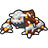
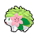
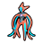
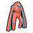
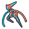
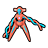

The story mode of Guardian Signs provides the player with access to 301 Pokémon. However, the "Ranger Net" feature, accessible from the main menu, allows the player to access six missions that will provide them with access to an additional six Pokémon, as well as a Manaphy Egg, special Heatran, special Shaymin, and special Deoxys. This page provides a quick overview of the six missions.
In all versions of the game, these missions were only obtainable via special Wi-Fi distributions between 2010 and 2011 (with the Giratina and Arceus missions extending until the shutdown of DS servers in 2014). These missions can be obtained currently with the use of specific tools.
As far as I can tell, these missions were never distributed for the Wii U Virtual Console. Even if they were, the Manaphy egg, Heatran, Shaymin, and Deoxys obtained through the missions would not have been transferable to any DS Pokémon game.
This was distributed between March 2010 and January 2011.
This mission, which takes place on Lapras Beach and then in the Coral Sea, requires the player to retrieve a Manaphy Egg before Pinchers can make off with it.
Completing this mission will provide the player with a Manaphy Egg. In the original release of the game, this Egg can be transferred to a copy of Diamond, Pearl, Platinum, HeartGold, or SoulSilver using the DS' wireless functionality. Only one Manaphy egg may be obtained per Guardian Signs cartridge.
Note that, as Pokémon Bank has been confirmed for shutdown on 26 February 2027, this Manaphy will not be able to go to Pokémon Bank after that date. Therefore, this Manaphy will no longer be obtainable in any 3DS or Switch game. The latest game that this Manaphy will be able to travel to is Black, White, Black 2, or White 2.
This was distributed in between March 2010 and January 2011.
This mission, which takes place at Faldera Volcano, requires the player to rescue tourists on the side of the erupting volcano and then capture the Heatran causing the eruption.
Completing this mission will provide the player with a Heatran with the special move Eruption. In the original release of the game, this Heatran can be transferred to a copy of Diamond, Pearl, Platinum, HeartGold, or SoulSilver using the DS' wireless functionality. Only one Heatran may be obtained per Guardian Signs cartridge.
Note that, as Pokémon Bank has been confirmed for shutdown on 26 February 2027, this Heatran will not be able to go to Pokémon Bank after that date. Therefore, this Heatran will no longer be obtainable in any 3DS or Switch game. The latest game that this Heatran will be able to travel to is Black, White, Black 2, or White 2.
|
 |
Heatran ♂ | Flash Fire | Quiet | Lv.50 | Eruption | Magma Storm | Earth Power | AncientPower | ||||
This was distributed between March 2010 and January 2011.
This mission, which takes place on Latolato Trail and then in the sky, requires the player to follow and capture a lost Shaymin.
Completing this mission will provide the player with a Shaymin. In the original release of the game, this Shaymin can be transferred to a copy of Diamond, Pearl, Platinum, HeartGold, or SoulSilver using the DS' wireless functionality. Only one Shaymin may be obtained per Guardian Signs cartridge.
Note that, as Pokémon Bank has been confirmed for shutdown on 26 February 2027, this Shaymin will not be able to go to Pokémon Bank after that date. Therefore, this Shaymin will no longer be obtainable in any 3DS or Switch game. The latest game that this Shaymin will be able to travel to is Black, White, Black 2, or White 2.
|
 |
Shaymin | Natural Cure | Lv.30 | Growth | Magical Leaf | Leech Seed | Synthesis | ||||
This was distributed between March 2010 and January 2011.
This mission is actually a Past Mission which must be completed in the Odd Temple. At least two players are required to complete the mission, or a cheat code must be used to allow the player to press one of the two-player switches with only a single game.
Completing this mission will provide the player with a Deoxys. Its Forme, and whether it possesses a special move, is determined by the rank the player receives for completing the mission. In the original release of the game, this Deoxys can be transferred to a copy of Diamond, Pearl, Platinum, HeartGold, or SoulSilver using the DS' wireless functionality. Unlike the other special Pokémon, multiple Deoxys can be obtained on a single Guardian Signs cartridge by completing the mission multiple times, but any main series game can only receive a single Deoxys.
|
 |
Deoxys (Attack) | Pressure | Lv.50 | Psycho Boost | Meteor Mash | Superpower | Hyper Beam | ||||
|
 |
Deoxys (Defense) | Pressure | Lv.50 | Psycho Boost | Detect | Counter | Mirror Coat | ||||
|
 |
Deoxys (Speed) | Pressure | Lv.50 | Psycho Boost | Swift | Double Team | ExtremeSpeed | ||||
|
 |
Deoxys (Normal) | Pressure | Lv.50 | Psycho Boost | Leer | Wrap | Night Shade | ||||
This was distributed between April 2010 and May 2014.
This mission, which takes place in the Oblivia Ruins, requires the player to reunite Giratina with its Griseous Orb.
Completing this mission adds Giratina to the player's Browser; it is marked with a "Special" Browser number.
This was distributed between April 2010 and May 2014.
This mission, which takes place at the Sky Fortress, requires the player to investigate distortions and ultimately capture Dialga, Palkia, Giratina, and Arceus.
Completing this mission adds Dialga, Palkia, Giratina, and Arceus to the player's Browser; they are marked with a "Special" Browser number.